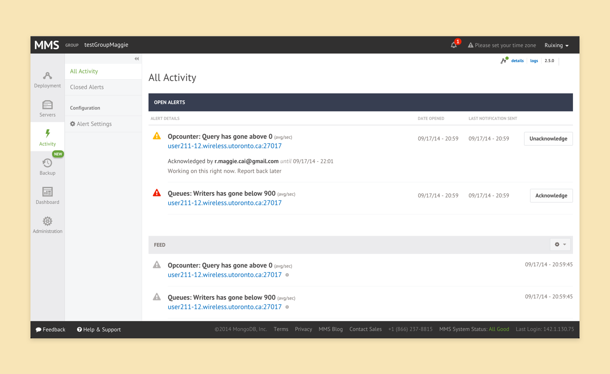

We wanted to help users coordinate and communicate better with their team members when managing database. Based on customer feedback, we wanted to introduce a new feature that will allow users to leave a comment when they acknowledge an alert.
MongoDB Monitoring Service (MMS) Open Alerts Feed Redesign
UX Design, UI Design, Front-end

New alerts feed.
Modal for acknowledging alerts.
Email notification.